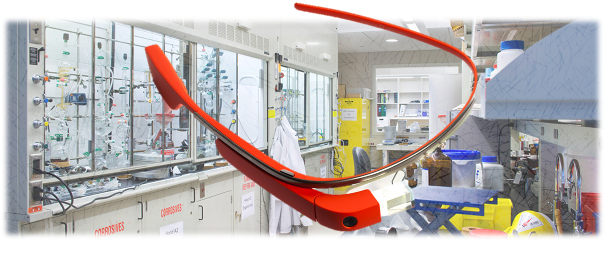

Innovation with Google Glass
We have been developing a collection of prototypes and demos that demonstrate the potential of heads up displays like Google Glass.

Google Glass in the Lab
See how we've created a prototype system that diplays information on Glass applicable to a lab environment.

Realtime Data Streaming on Glass
We can stream data live from Glass and Bluetooth sensors for display and processing on the web. What will you do with this capability?

Tuner

Wonder if you're singing in tune? We demonstrate that Glass can process audio using FFT in realtime.
Technical Details
This project was designed to be a modular architecture upon which Google Glass rapid prototypes can be built. Click to learn about how it was built, and how you can contribute.